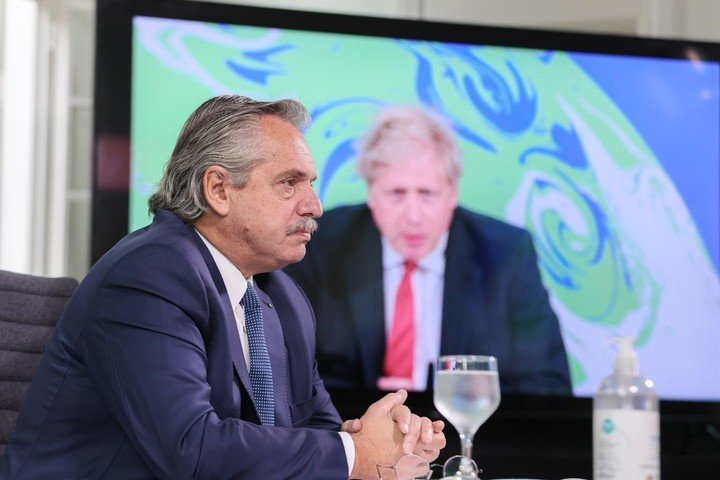

En la Cumbre Climática, Alberto Fernández volvió a hablar de la deuda e hizo un pedido a los líderes mundiales
El jefe de Estado reclamó flexibilización de plazos, tasas y condiciones.

El jefe de Estado reclamó flexibilización de plazos, tasas y condiciones.
El presidente Alberto Fernández participó este jueves de manera virtual de la Cumbre de Líderes sobre el Clima convocada por los Estados Unidos, en el marco del Día Internacional de la Madre Tierra.
En su discurso de 4 minutos, el mandatario recurrió a citas del ex presidente Juan Domingo Perón y del papa Francisco para presentar la posición de la Argentina respecto a la acción climática y ambiental.
Pero además, aprovecho para volver a hablar de la deuda e hizo un pedido a los líderes mundiales.
"En una relación fenómenos de sobre endeudamiento irresponsable generados antes de la pandemia y agravados por la presencia de este virus, es necesaria una mayor flexibilización de plazo, tasas y condiciones", subrayó.
Tal como lo había hecho durante la Cumbre Iberoamericana, Fernández volvió a pedir " renovar la arquitectura financiera internacional ", lo que significaría " canjes de deuda por acción climática y nuevas asignaciones de derechos especiales de giro sin discriminar a los Paises medios de Renta
"Aspiro a que en esta Cumbre nazca un nuevo camino. Es la hora histórica de soñar juntos. Convoco desde aquí a mis queridos colegas de América Latina y el Caribe, para que también coordinemos medidas regionales y solidarias. Nos están mirando las nuevas generaciones. El tiempo de las dudas terminó . Nadie se salva solo ", subrayó.
En ese marco, el jefe de Estado llamó a "transitar unidos el tiempo de la justicia social, financiera y ambiental".
"Para que esta transición sea justa y comience por los últimos para llegar a todos, necesitamos recordar lo que magistralmente nuestro querido papa Francisco suele decir: 'la crisis ecológica y la crisis social son dos caras de un mismo problema'", resaltó Fernández.
Durante su exposición, el Presidente afirmó que Argentina enviará en breve al Congreso de la Nación un proyecto de ley para la protección ambiental de los bosques nativos, y preciso que el país "ha puesto la acción climática y ambiental en el centro de sus convicciones".
"Como dijera proféticamente hace 50 años, el general (Juan Domingo) Perón, debemos tomar conciencia de la marcha suicida que la humanidad ha emprendido a través de la contaminación del Medio Ambiente y la Biósfera", subrayó Fernández.
En ese sentido, el jefe de Estado agradeció la invitación de su par de Estados Unidos, Joe Biden , para participar de la Cumbre, y destacó: "Celebro que los Estados Unidos retomen esta agenda esencial para el futuro de la humanidad".